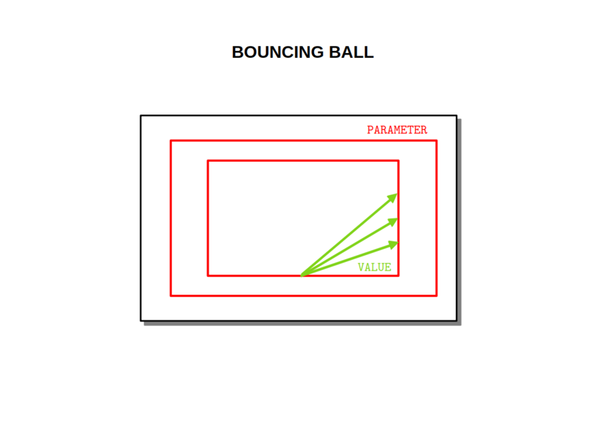

BOUNCING_BALL

PRÉSENTATION
Juste pour donner un exemple fun de ce qu’il est possible de faire avec ce module.
BALL
Gère la trajectoire de la balle = position (x, y).
À chaque impact une note est jouée.
Les tempos sont constants sur chaque murs opposés mais pas synchronisés.
DISPLAY
Gère l’affichage OLED :
- balle ponctuelle
- taille du cadre
ENCODER
L’encodeur PARAMETER modifie l’angle de la trajectoire.
L’encodeur VALUE modifie la taille du cadre.
MIDI
Le canal MIDI est 1 et les notes MIDI valent 24 et 48 (C2 et C4 ?)
DONNÉES TECHNIQUES
Alimentation :
- Bus Eurorack : +12v 40mA
Dimensions :
- largeur : 12HP
- profondeur : 27mm
Librairies :
- SPI 1.0
- Versatile_RotaryEncoder 1.3.1
- U8g2 2.35.30
- Wire 1.0
Plateforme :
- thinary:avr 1.0.0